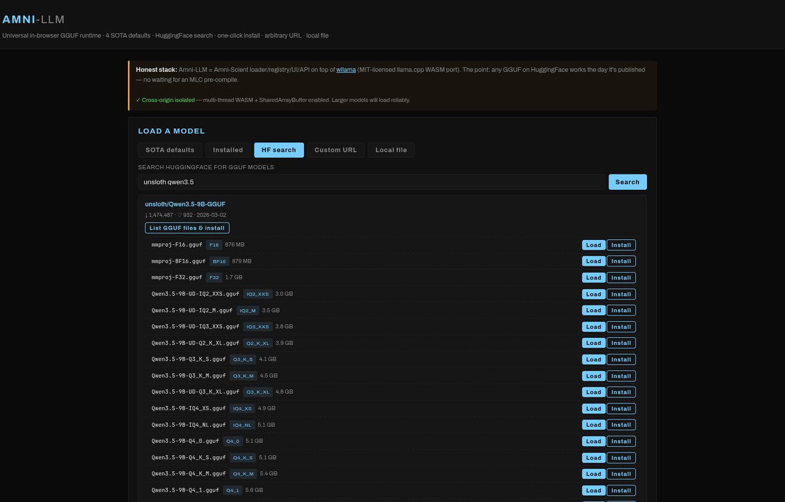

UNIVERSAL IN-BROWSER GGUF RUNTIME • LOAD ANY MODEL • OPEN SOURCE (MIT)
A universal in-browser GGUF runtime.

Existing in-browser runtimes like WebLLM (MLC) require every model to be specifically TVM-compiled to WebGPU shaders before it runs.
Search HuggingFace live from inside the app. Pick a model, pick a quantization, click Load or Install. Works for anything with a GGUF build — including Qwen 3.5, DeepSeek-R1, Mistral Nemo, Phi-4, plus thousands of community fine-tunes. Models too large for browser memory (e.g. Llama 4 Scout's 29 GB minimum quant) appear in search but won't load on most machines.
Drop a `.gguf` file straight from your disk. Bytes never leave your machine. Useful for proprietary fine-tunes you can't host publicly, or large models you've already downloaded for desktop tools like Ollama or LM Studio.
Inference runs in your browser via WebAssembly. Your prompts, your weights, your replies — nothing transits a server. The HuggingFace search hits HF's public API; the model download is a direct browser-to-HF transfer.
Curated short list of current Qwen GGUF builds that fit a typical browser memory budget — Qwen 3.5 (0.8B, 4B, 9B) plus Qwen 2.5 (0.5B, 1.5B, Math 7B), six in all. One click to load. For math/engineering or any other niche, use the built-in HF search.
Built-in live search of `huggingface.co/api/models?library=gguf`. Type any keyword, expand a result to see GGUF files with quantization labels and sizes, then Load or Install. The Installed tab keeps your picks under `localStorage`.
Drop-in `chatCompletions.create({messages, temperature, max_tokens})`, plus async iterator streaming via `chatStream()`. Migrating an existing WebLLM integration is mostly a one-line import change.
| Feature | Amni-LLM | WebLLM (MLC) |
|---|---|---|
| Load arbitrary HuggingFace model | Yes — any GGUF | No — only MLC pre-compiled |
| Qwen 3.5 today | Yes (verified GGUFs from unsloth) | Not until MLC publishes bundles |
| Llama 4 Scout/Maverick today | Available in HF search; smallest quant is ~29 GB so does not fit in browser memory on typical machines | Not in registry |
| Local `.gguf` upload | Yes | No |
| WebGPU acceleration | Experimental | Mature |
| CPU SIMD fallback | Yes (default) | No |
| Tokens/sec on a 7B Q4 (desktop) | ~3-8 t/s | ~15-30 t/s |
| Bundle / runtime size | ~3 MB WASM | ~600 KB JS + per-model WASM |
| OpenAI-style chat API | Yes | Yes |
| Streaming output | Yes | Yes |
| Browser cache for weights | Yes (IndexedDB) | Yes |
| License | MIT | Apache 2.0 |
The transformer math runs through wllama (MIT-licensed llama.cpp WASM port).
Performance honesty: per-token throughput is lower than MLC's WebGPU stack because llama.cpp WASM hasn't shipped mature WebGPU support yet. For interactive chat at small models the difference is barely noticeable. For high-throughput production workloads where MLC supports the model you need, MLC remains faster.
Memory note: in-browser models are bounded by the browser's allocator. Mobile browsers cap around 1 GB; desktop typically allows 2-4 GB without cross-origin isolation, more with it. Amni-LLM ships a service worker that enables COOP/COEP headers on static hosts (GitHub Pages, etc.) so SharedArrayBuffer becomes available and multi-thread WASM with larger memory works.
No install, no sign-up. Pick a model and start chatting.